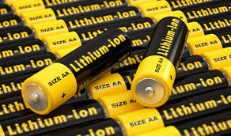
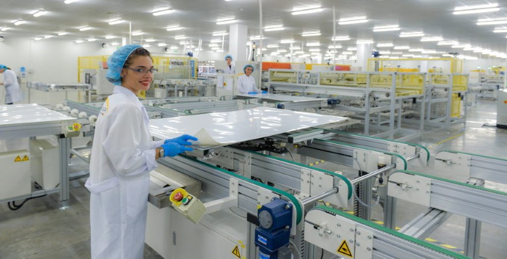

Solar Panels
How Solar Panels Work
Solar panels and lithium-ion batteries both help the environment and to reduce electricity costs. They do this
by being a renewable energy source that doesn't produce harmful biproducts. They generate electricity from the  sun (An energy source that will last a couple billion years) so that less fossil fuels are being burnt, which are
harmful towards the environment. The sun uses nuclear fusion with four hydrogen atoms fusing to make one helium
atom, which produces a large amount of energy. Since the sun does this thousands of times a second, this becomes
a huge amount of electricity for solar panels to collect. They use silicone to transform the energy in the sun's
rays into electrical potential energy (EPE) which is then stored in a battery. The house can then use the energy
whenever even at night or when the solar panels are not generating electricity.
sun (An energy source that will last a couple billion years) so that less fossil fuels are being burnt, which are
harmful towards the environment. The sun uses nuclear fusion with four hydrogen atoms fusing to make one helium
atom, which produces a large amount of energy. Since the sun does this thousands of times a second, this becomes
a huge amount of electricity for solar panels to collect. They use silicone to transform the energy in the sun's
rays into electrical potential energy (EPE) which is then stored in a battery. The house can then use the energy
whenever even at night or when the solar panels are not generating electricity.
How Lithium-Ion Batteries Work
Lithium-Ion batteries work by transferring generated electricity into the desired output location on demand. The electrons in the battery flow from the positive side of the battery through the electrode to the negative side to charge the device the battery is connected to. Once the device is fully charged the electrons will stop flowing. While the device is in use and draining the battery the electrons will flow from the negative side to the positive side through an outer circuit. Once the electrons get back to the positive side they will combine and deposit the lithium, once this has finished the device will need to charge again.
Benefits of Solar Panels
Lithium-ion batteries and solar panels have many benefits Financially, environmentally and wellbeing. Solar panels (once installed) don't run on electricity or cost money to run and with a battery can store electricity so the house can have power night or in a storm. This combined with the fact that you can get paid for exporting excess energy to the grid means solar panels are a lot cheaper (long term) than using non-renewable energy sources. Solar panels also have environmental benefits as solar panels only release tinniest bit of toxic gasses and is renewable as we will never run out of the sun's rays as the sun would swallow the earth whole before going supernova. Solar panels release only the tinniest amount of air pollutants which reduces the chance of cardiovascular and respiratory diseases.
Benefits of Lithium-Ion Batteries
Lithium-Ion batteries have financial benefits as they are more energy efficient meaning they use less energy to power the same device for the same time than a normal battery, this makes your energy bills less expensive as you will use less energy. Lithium-ion batteries are better for the environment than normal batteries as even solar panels release the smallest number of toxic gasses, lithium-ion batteries use less electricity using the same appliance for the same amount of time so the solar panels or another source of electricity don't have to produce as much energy and release as much toxic gasses. Like the solar panels fewer toxic gasses being released reduces the chance of cardiovascular and respiratory diseases.
Green Construction Loans
Green construction loans are special loans you can take out when you are building a house, they give you a discount on a construction loan if your house is good for the environment. To get a green construction loan you need to have a NatHERS certificate which have a star rating out of 10, different companies require a different minimum score for a loan.
Why is Solar Panel Production Slowing Down?
Solar panels and lithium-ion batteries are slowing down in production and are used less in homes, for solar panels part of the problem is the price and people already having them. Solar panels cost a lot to start up and there are installation fees, this means even though solar panels are cheaper in the long run struggling families won't be able to afford them. On top of this solar panels have been popular and most of the people who want and can afford them already have solar panels. The solar panel industry is also reliant on government programs and funding so it could crumple if help stopped.
Why is Lithium-Ion Battery Production Slowing Down?
Lithium-ion batteries are slowing down in production due to reasons such as cost rising and running out of lithium. Lithium-ion batteries like solar panels are expensive to start but cheaper in the long run, this again makes them not accessible to struggling families. Humans are also depleting the world of lithium meaning lithium-ion batteries will continue to get more expensive and eventually not be able to be made.
How are Solar Panels Overcoming Production Slowing Down?
Solar panel production is slowing down due to cost and people already having solar panels, they are overcoming this by ever becoming cheaper and people wanting more solar panels to export energy to the grid. Solar panel production technology is becoming better and better making manufacturing cheaper and cost to buy panels cheaper. This means people with less money can now afford solar panels and more people who could afford them before will be able to in the future. People also get paid when their power is exported to the grid, so people want to buy more solar panels now they can make more money.
How are Lithium-Ion Batteries Overcoming Production Slowing Down?
Lithium-Ion batteries production is slowing due to cost and running out of lithium. The Lithium-ion battery business is combating this by developing their technology further and researching alternative materials. The lithium-ion battery business is developing their technology further so that it costs them less to make them and then they can sell them for less. This makes them available to struggling families as well and then gives the business more sales. The lithium-ion battery business is always testing new materials to replace lithium to combat the world running out of lithium. If they succeed their business can last for a lot longer maybe even until the end of humanity.
How Much Money Do Solar Panels Save You?
Solar panels save you a lot of money as once you pay for the panels and the battery, (which can be quite expensive) you don't have to pay for the energy you generate. The average household uses 18 KW (kilowatts) of power a day, and the average house has 14 solar panels, and each solar panel produces 350W/h (watts per hour). On an average day you get 3-5 hours of peak sun (We will use 4 hours for our calculation). If 14 panels x 350W/h = 4.9KW/h x 4 hours of sun = 19.8 more than the 18 KW needed a day. The average electricity price is 36c per KW and if we use the 18 KW per day would equate to $64.8, for our 4.9KW/h system it would cost $5,130 plus about $8,000 for the battery the entire system would cost $13,130 which means after 203 days you would save money and would continue to do so.